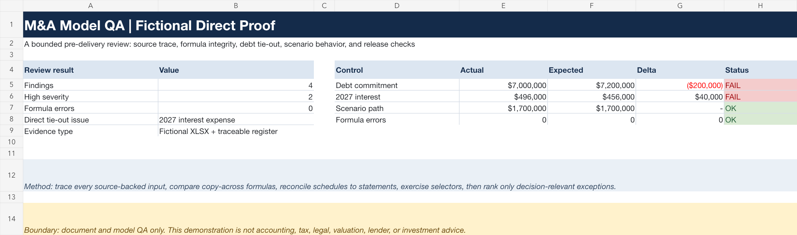

Interest expense does not tie
$496,000 observed versus $456,000 expected.
The 2027 P&L formula uses beginning debt instead of average debt.
Debt Schedule!D10 vs D9
A fictional acquisition-model review showing exact source references, debt-schedule reconciliation, scenario checks, and release acceptance tests.

Every finding states the observed value, expected value, exact workbook location, fix, and acceptance condition.
$496,000 observed versus $456,000 expected.
The 2027 P&L formula uses beginning debt instead of average debt.
Debt Schedule!D10 vs D9
$7.0m in the model versus $7.2m in TERM-01.
An unsupported $200k override is absorbed by sponsor equity, so sources still appear to balance.
Acquisition Model!C8 vs Source Documents!E9
The selector reprices EBITDA, but leverage and return outputs are not linked to the selected case.
Acquisition Model!C14:C16
Calculated sponsor equity moves from $4.3m to $4.5m and hides the unsupported debt-source change.
Acquisition Model!C8:C10
Built for a paid test where careful traceability matters more than scanning speed.
This fictional example demonstrates model and document QA only. It is not accounting, tax, legal, valuation, lender, or investment advice, and it contains no real client or transaction information.